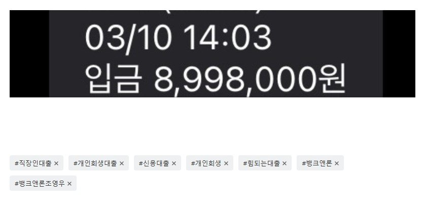

[개인회생자대출] 미납6회(756만원), 기대출 있는 상황에서 900만원 승인. 조영우 이사와의 대출후기
안녕하세요
저는 직장에 이제 5월이면 2년차가 되는 일반 사무직 직장인입니다.
연봉은 세전으로 3,500정도 되고 개인 회생중에 있습니다.
투잡을 해가며 회생비를 납부하던 중 작년 8월에 알바에 짤리면서
생계가 어려워졌고, 개인회생 15회차 6회 미납상태가 되었습니다.
월 납입금은 126만원정도 되고 1인가구에 기대출도 1,327만원정도 있었습니다.
기대출은 최근대출은 아니었고 6개월이상은 지난 대출입니다.
6회차까지 미납이면 폐지가 될 수 있는 상태여서 너무 조마조마하고 답답한 마음에
타카페에 넋두리 삼아 글을 남겼는데 다른회원분이 뱅크앤론에 문의해보시라고
댓글이 달려서 혹시나 하는 마음에 문의를 해봤고 그러던중 조영우 이사님과 상담이 이어졌습니다.
저는 솔직히 당연히 안될거라고 생각하고 있었고 반신반의하며 상담을 이어가던 중
처음 심사를 넣었던 곳은 당연히 부결이었습니다. 그래서 반포기상태로
어쩔 수 없겠구나 싶던 찰나에 두번째곳에서 900만원 승인이 났습니다.
미납금 759만원에 여유자금 141만원해서 900만원이었습니다.
정말 다시 생각해봐도 너무 감사드리고 .... 이래서 사람이 죽으라는 법은
없나보다 라고 생각이 들었습니다. 1인가구라고 해도 월에 245만원정도 수령해가며 달에 126만원을 갚고
119만원을 가지고 사는게 생각보다 쉽지가 않더라구요 ...출퇴근을 해야하기에
차량이 필요했고 <기존차량은 회생때 처분되어서 어쩔 수가 없었습니다> 차량 유지비에 기본적으로
나가는 고정지출이 있다보니 도저히 달에 126만원을 다 넣기가 어려웠습니다.
정말 감사합니다. 다시 투잡일을 시작할 수 있게되어서 이제 미납없이 유지해보려합니다.
남들은 그러더라구요... 또 빚을 지는건데 뭐가 그렇게 신이나는지 모르겠다구요 ....
저같은 상황에 처해보지 않으면 저를 이해할 수 없다고 생각이 들면서 뭔가 속상했지만
이렇게 또 도와주시는 분도 계시다는 생각을 하며 다시 힘을 낼 수 있게 되었습니다.
이제 미납없이 잘 유지하는게 저의 목표입니다! 모두 화이팅! 너무 감사합니다 조영우 이사님

https://cafe.naver.com/cityman88/310386